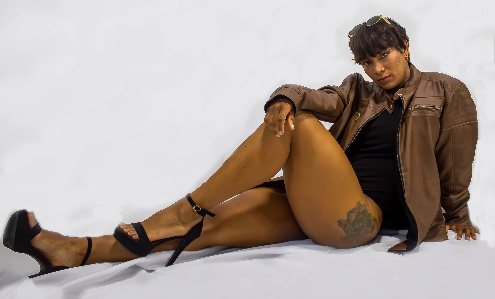
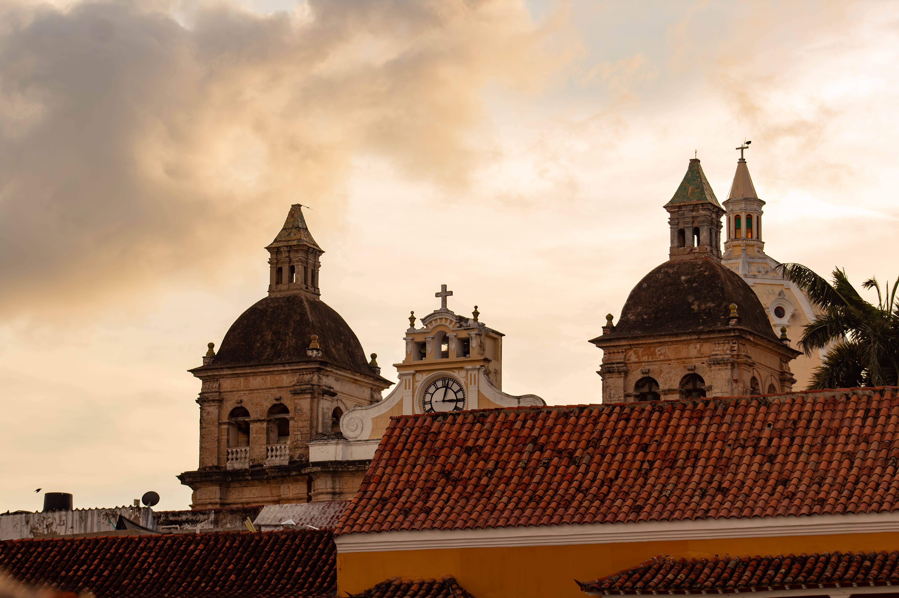
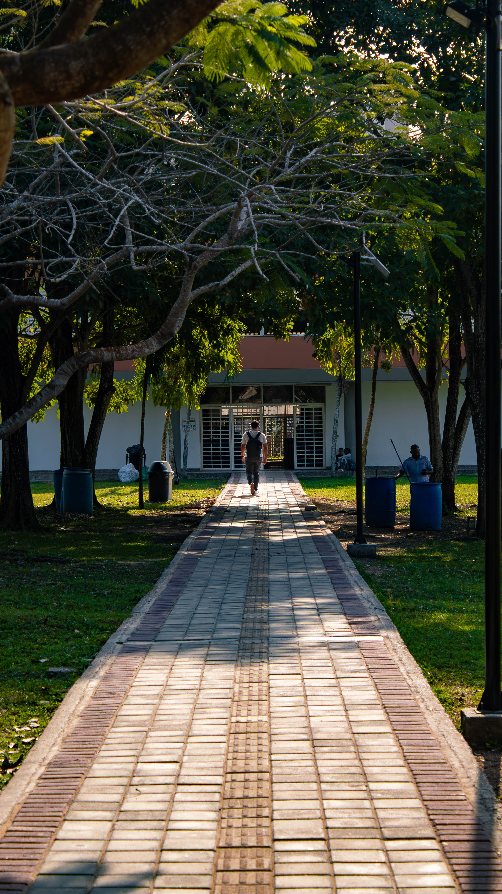
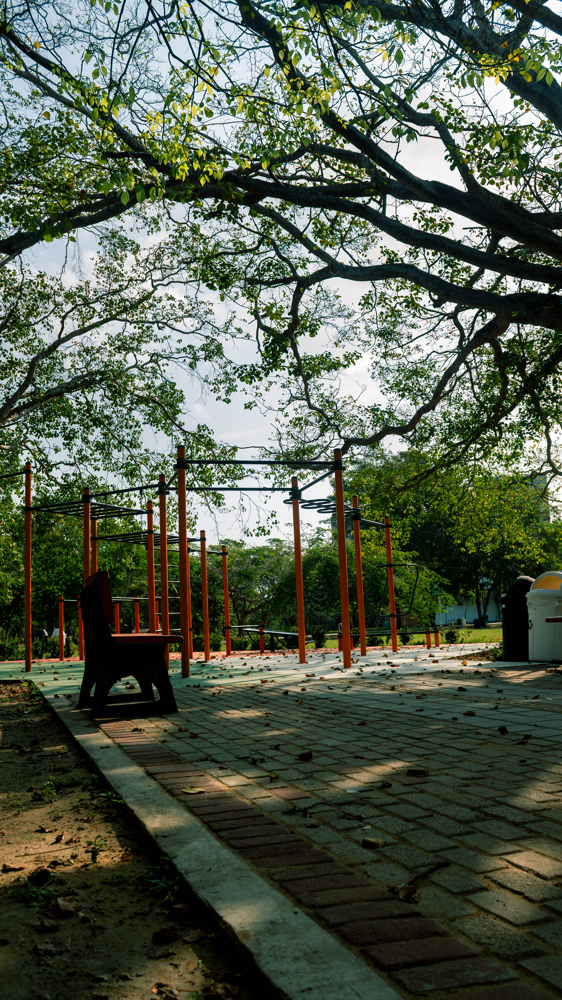
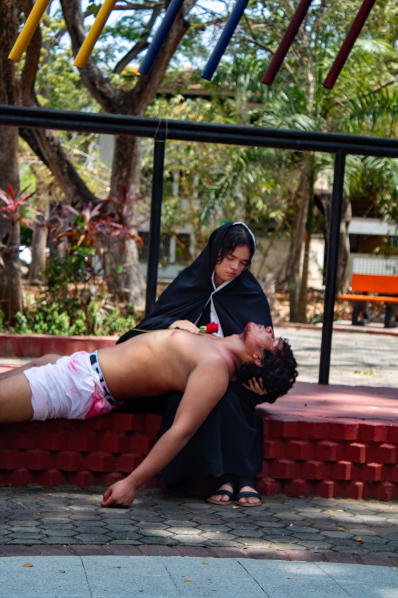

01
MI HISTORIA
Una mirada personal detrás de cada fotografía.
Se trata de observar, encontrar el momento y capturarlo de una manera que transmita algo. Cada imagen representa una mirada personal sobre las personas, los lugares y las historias que encuentro.

RETRATO
Cada persona tiene una historia que contar.
En cada retrato busco capturar más que un rostro: la personalidad, la expresión y esos pequeños detalles que hacen única a cada persona.

MODELAJE
La actitud también construye una imagen.
Cada pose, expresión y detalle ayuda a construir una fotografía que transmite personalidad y seguridad.

URBANA
La ciudad nunca deja de moverse.
Calles, personas, arquitectura y momentos inesperados forman escenas que pueden convertirse en fotografías memorables.
GALERÍA
Fragmentos de luz Que generan emociones
MI Proyecto visual.


